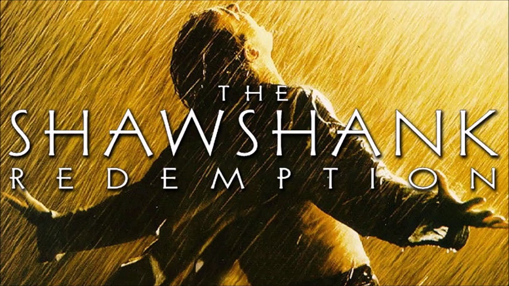

The Martian

Parasite

The Martian is a 2015 science fiction film directed by Ridley Scott and starring Matt Damon. The Martian, a novel by Andy Weir, served as the screenplay adapted by Drew Goddard. The film depicts an astronaut's (Matt Damon) lone struggle to survive on Mars after being left behind, and efforts to rescue him and bring him home to Earth. It also stars Jessica Chastain, Jeff Daniels, Kristen Wiig, Chiwetel Ejiofor, Sean Bean, Michael Peña, Kate Mara, Sebastian Stan, Aksel Hennie, Mackenzie Davis, Donald Glover, and Benedict Wong.
Produced through 20th Century Fox, the film is a co-production of the United States and the United Kingdom. Producer Simon Kinberg began developing the film after Fox optioned the novel in March 2013, which Drew Goddard adapted into a screenplay and was initially attached to direct, but the film did not move forward. Scott replaced Goddard, and with Damon in place as the main character, production was approved. Filming began in November 2014 and lasted approximately seventy days. Twenty sets were built on one of the largest sound stages in the world in Budapest, Hungary. Wadi Rum in Jordan was also used for exterior filming.
The film premiered at the 2015 Toronto International Film Festival on September 11, 2015, while the London premiere was held on September 24, 2015. The film was released in the United Kingdom on September 30, 2015, and in the United States on October 2, 2015, in 2D, 3D, IMAX 3D and 4DX. It received positive reviews and grossed over $630 million worldwide, becoming Scott's highest-grossing film to date, as well as the 10th-highest-grossing film of 2015. The Martian received praise for its direction, visual effects, musical score, screenplay, scientific accuracy, and likability, largely due to Damon's performance. It received several accolades, including the Golden Globe Award for Best Motion Picture – Musical or Comedy, seven nominations at the 88th Academy Awards, including Best Picture and Best Adapted Screenplay for Goddard, and the 2016 long form Hugo Award for Best Dramatic Presentation. Damon won the Golden Globe Award for Best Actor – Motion Picture Musical or Comedy and was nominated for several awards including the Academy Award for Best Actor, the BAFTA Award for Best Actor in a Leading Role, and the Critic's Choice Award for Best Actor.
Parasite (Korean: 기생충; RR: Gisaengchung) is a 2019 South Korean black comedy thriller film directed by Bong Joon-ho, who also co-wrote the screenplay with Han Jin-won. It stars Song Kang-ho, Lee Sun-kyun, Cho Yeo-jeong, Choi Woo-shik, Park So-dam, Jang Hye-jin, and Lee Jung-eun and follows the members of a poor family who scheme to become employed by a wealthy family by infiltrating their household and posing as unrelated, highly qualified individuals.
Parasite premiered at the 2019 Cannes Film Festival on 21 May 2019, where it became the first South Korean film to win the Palme d'Or. It was then released in South Korea by CJ Entertainment on 30 May 2019.
The film received unanimous critical acclaim and was considered by many critics as the best film of 2019 as well as one of the best films of the 2010s. It grossed over $266 million worldwide on a production budget of about $11 million, becoming the highest-grossing South Korean film. Among its numerous accolades, Parasite won a leading four awards at the 92nd Academy Awards: Best Picture, Best Director, Best Original Screenplay, and Best International Feature Film, becoming the first film not in English to win the Academy Award for Best Picture. It was also the first South Korean film to receive Academy Award recognition. It also won the Golden Globe Award for Best Foreign Language Film and the BAFTA Award for Best Film Not in the English Language, and became the first film not in English to win the Screen Actors Guild Award for Outstanding Performance by a Cast in a Motion Picture.
The Shawshank Redemption is a 1994 American drama film written and directed by Frank Darabont, based on the 1982 Stephen King novella Rita Hayworth and Shawshank Redemption. It tells the story of banker Andy Dufresne (Tim Robbins), who is sentenced to life in Shawshank State Penitentiary for the murders of his wife and her lover, despite his claims of innocence. Over the following two decades, he befriends a fellow prisoner, contraband smuggler Ellis "Red" Redding (Morgan Freeman), and becomes instrumental in a money-laundering operation led by the prison warden Samuel Norton (Bob Gunton). William Sadler, Clancy Brown, Gil Bellows, and James Whitmore appear in supporting roles.
Darabont purchased the film rights to King's story in 1987, but development did not begin until five years later, when he wrote the script over an eight-week period. Two weeks after submitting his script to Castle Rock Entertainment, Darabont secured a $25 million budget to produce The Shawshank Redemption, which started pre-production in January 1993. While the film is set in Maine, principal photography took place from June to August 1993 almost entirely in Mansfield, Ohio, with the Ohio State Reformatory serving as the eponymous penitentiary. The project attracted many stars of the time for the role of Andy, including Tom Hanks, Tom Cruise, and Kevin Costner. Thomas Newman provided the film's score.
While The Shawshank Redemption received positive reviews on its release, particularly for its story and the performances of Robbins and Freeman, it was a box-office disappointment, earning only $16 million during its initial theatrical run. Many reasons were cited for its failure at the time, including competition from films such as Pulp Fiction and Forrest Gump, to the general unpopularity of prison films, lack of female characters, and even the title, which was considered to be confusing for audiences. It went on to receive multiple award nominations, including seven Academy Award nominations, and a theatrical re-release that, combined with international takings, increased the film's box-office gross to $58.3 million.
Over 320,000 VHS copies were shipped throughout the United States, and based on its award nominations and word of mouth, it became one of the top rented films of 1995. The broadcast rights were acquired following the purchase of Castle Rock by Turner Broadcasting System, and it was shown regularly on the TNT network starting in 1997, further increasing its popularity. It is now considered by many to be one of the greatest films of the 1990s. As of 2017, the film is still broadcast regularly, and is popular in several countries, with audience members and celebrities citing it as a source of inspiration, and naming the film as a favorite in various surveys. In 2015, the United States Library of Congress selected the film for preservation in the National Film Registry, finding it "culturally, historically, or aesthetically significant".